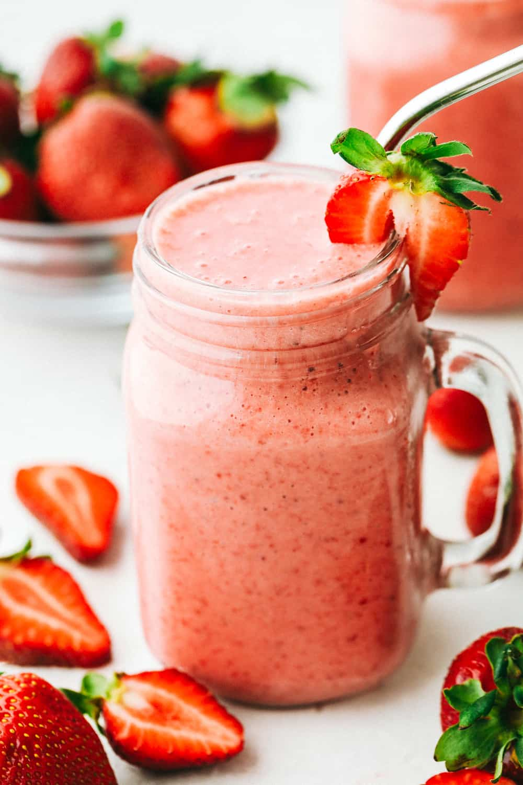

Strawberry Smoothie

Description
This is a sweet and simple strawberry smoothie recipe.
It yields two servings, but it can be adjusted for more.
Perfect for a quick, cold treat!
Ingredients
- 8 strawberries, hulled
- 1/2 cup milk
- 1/2 cup plain yogurt
- 3 tablespoons white sugar
- 2 teaspoons vanilla extract
- 6 ice cubes
Steps
- Add strawberries, milk, yogurt, sugar, vanilla, and ice in a blender.
Blend until smooth and creamy.
- Pour into glasses and serve immediately.